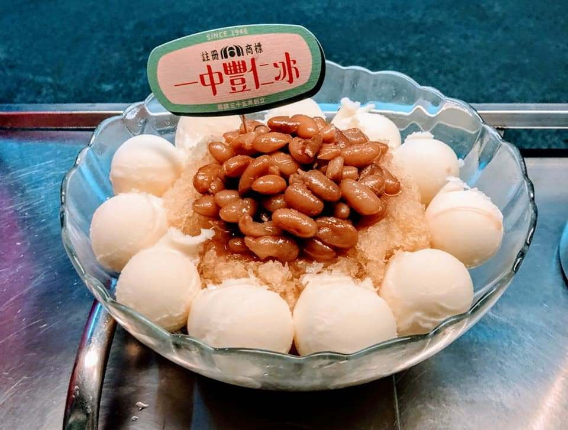
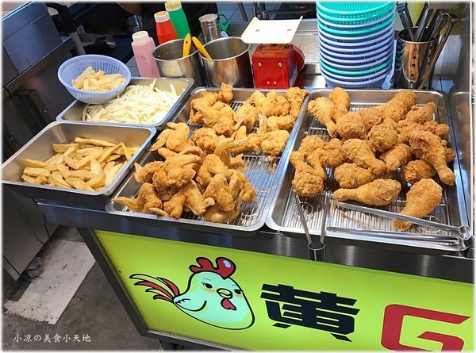

| 台中 | 彰化 | 苗栗 |
台中：
來到台中，當然就是要去逛一下名聞遐邇的逢甲夜市啦，逢甲夜市裡最有名的當然就是那個跟臉差不多大的逢甲大雞排， 剛炸好的雞排還沒出爐，光是先下去油炸的時候就聞的到那只屬於那個雞排的特殊香氣，炸好且包裝好後， 雖然很大一塊但完全不失雞排的風味，也不會太乾反而還會出水呢!! 想吃的客人就可以到台中的逢甲夜市吃吃看這個揚名國內外的逢甲大雞排， 連台中人吃過都讚不絕口呢!!
首先! 第一家：一中豐仁冰
豐仁冰是由酸梅冰、冰淇淋、大豆組成的冰品，層次豐富、富含口感的組合，
台中只有兩家！而今天要介紹的是一中豐仁冰，斜對台中一中校門，是許多學子深刻的回憶，
酸酸的烏梅清冰搭上甜而不膩的大豆，配上雞蛋冰的味道看似衝突，卻是讓人上癮的滋味！
而會有這個名稱，是因為儘管到了冬天，還是很多人不怕冷去光顧，所以被戲稱為瘋人冰~整個店面以小攤車為主，
賣的各種組合都不外乎是酸梅汁、冰淇淋、大豆，可以依照個人喜好挑選，像是怕酸的朋友就可以選乾的瘋人冰，
有四球冰淇淋，可以減緩酸度！而歷經多年，一中豐仁冰也推出新的包裝，外帶杯復刻簡約，帶著邊吃邊逛街超方便！

(圖片來源：一中豐仁冰FB)
第二家：逢甲夜市 黃G紅炸雞排
從開幕至今黃G紅炸雞不斷的調整到最佳狀態，想要帶給大家一個從下午延伸到宵夜的萬惡炸物美食，
讓你來到逢甲就想要回味的散步美食～店家日前再度推出新品地瓜薯條/炸雞翅、雞塊、雞腿，
口感類似湯翅外酥內嫩帶肉汁的滋味，怎能錯過呢！！香酥雞排也是店家招牌之一，厚實的大塊，
邊走邊吃好享受周末夜就是炸物夜，店家自調泰式醬，搭配炸的香酥可口的雞排，
化身三碗低咖異國風酸甜辣滋味一次大滿足！！黃G紅炸雞不只是專賣雞排，炸雞等～
也準備了鹹酥雞攤會出沒的炸物讓你來到黃G紅炸雞想吃蝦咪炸物通通有，不用跑兩個地方晚餐加菜，
宵夜聚餐小酌，這一個地方就能全部滿足。

(圖片來源：https://goo.gl/R1MpK9)